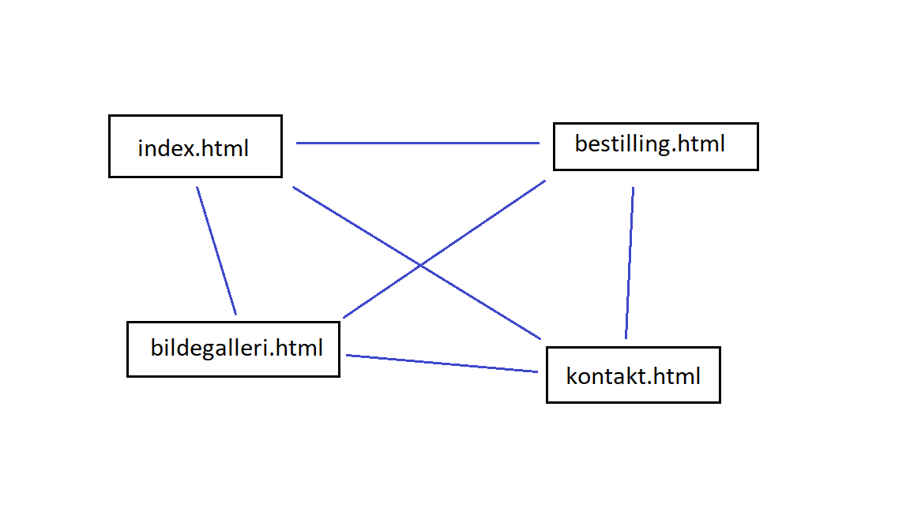
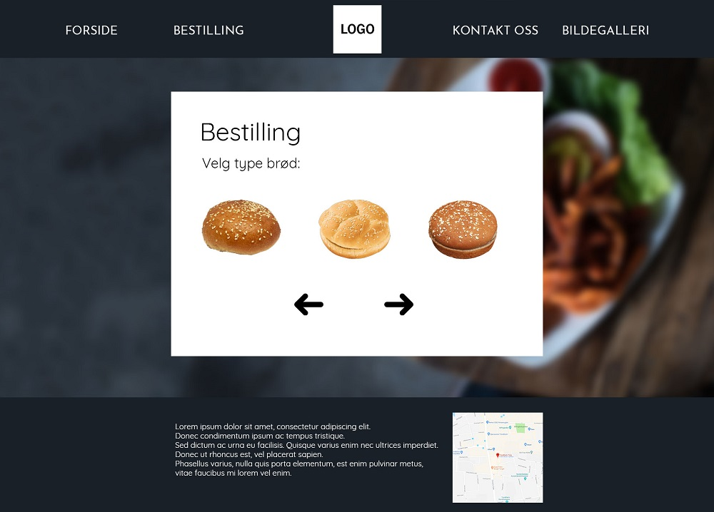
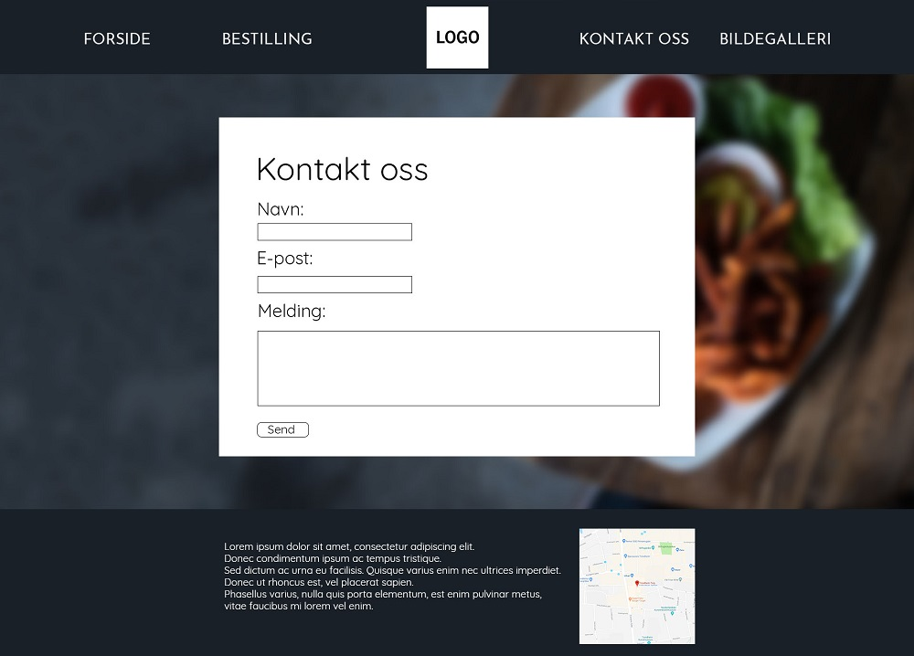
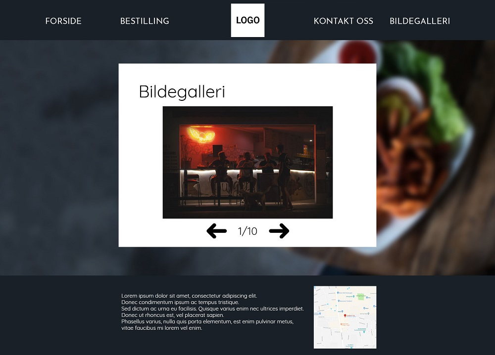

Klienten vår
- Klient: Restaurant: Bigger Better Burger Joint
- Kontaktperson: Bill B. Urger
Vår klient er restauranten Bigger Better Burger Joint. Dette er en nyåpnet restaurant, som ønsker å gjøre seg markert i Trondheim sentrum. Restauranten har et stort fokus på ferske råvarer og god mat.
Hensikt og mål
Restauranten trenger en nettside for markedføre seg selv. Hensikten med siden er både det å formidle informasjon om restauranten og kunne bestille en egen-designet burger. Vi planlegger å løse dette gjennom å implentere en infoside med informasjon og slideshow av maten og restauranten, i tilegg til å ha en egen bestillingside for å lage en egen burger. Siden restauranten vil ha en bestillingside vil de senere implementere database/backend for å ta imot evtuelle bestillinger. Vi har sammen med restauranten et mål om å lage en attraktiv side som vil appellere til kunden på en meget positiv måte.
Brukere
De typiske brukerne våres er personer i alle aldre. Åpenbart innenfor en viss geografisk nærhet. Brukerne må være kjent med internett, men nettsiden vår skal være intuitiv nok til at selv enkle brukere av internett skal kunne bruke siden vår. Brukerne våres har et behov om å få en visuell fremstilling av produktet, en meny, og pris.
Navigasjonsstruktur
Nettsiden har en blanding av hierarkistisk og lineær struktur. Nettsiden har en klikk-struktur. Brukeren har dermed muligheten til å nå hvilken som helst del av nettsiden gjennom navigasjonsbaren på toppen av hver side. Navigasjonsbaren viser knappene til de fire forskjellige nettsidene med en stor versjon av logoen i midten. Når brukeren blar lengre ned på nettsiden vil logoen minske til en mindre størrelse og midstille seg på navigasjonsbaren (knappene til de forskjellige nettsidene vil bli større). Navigasjonsbaren vil feste seg på toppen av siden når brukeren blar videre.
Vi har valgt denne strukturen for at brukeren skal kunne navigere seg raskt og lettest mulig på nettsiden vår. Dette gir et bedre brukergrensesnitt og gjør det lett å navigere for alle brukere uavhengig av kompetanse.
Design
Designet på nettsiden skal være rent og enkelt slik at nettsiden blir oversiktlig og lett å bruke. Hovedfokuset til nettsiden blir å presentere restauranten på en god og attraktiv måte. Navigasjonsbaren er designet slik at brukeren lett kan navigere på siden, samtidig som at den gir et positivt estetisk inntrykk.
Bestillingssiden skal ha bilder av de forskjellige ingrediensene som brukeren kan velge mellom. Dette skaper en mer interaktiv og oversiktlig bestillingsfunksjon.
Bildegalleriet er designet på en slik måte at brukeren kan se på bilder eksempelretter for å friste og inspirere brukeren.
- Font: Fonten vi skal bruke for hoveddelene av nettsiden skal være Quicksand. Til navbaren skal vi bruke Josefin Sans.
- Farge: Navbaren og footer skal ha farge #192028, skriftfarge hvit, hoveddelen av sidene skal ha hvit bakgrunn og svart skriftfarge. Den generelle bakgrunnen på sidene skal være bilde 1 (nedenfor). På forsiden vil det være første bildet i parallaxen, på den andre sidene skal det være en blurra versjon av bilde som bakgrunn.
- Bredde på siden: Bredde på hoveddelene på sidene skal være max 1000px.
- Navigasjonsbaren: Navbaren skal som sagt ha farge #192028 og skriftfarge hvit. Logoen skal være midstilt med link til forside og bestilling på venstre side og link til kontakt oss og bildegalleri på høyre side. Linkene skal endre farge når musen er over teksten. Når brukeren scroller ned på forsiden, skal navbaren endre seg til en mindre versjon (med animasjon. Logoen og skriften blir mindre). På de andre sidene skal navbaren være den mindre versjonen. Navbaren er festet til toppen av siden.
- Footer: I footeren skal det bli oppgitt åpningstider, email og telfonummer for kontakt og et kart som viser posisjonen til restauranten (Google Maps). Bakgrunnsfarge: #192028, skriftfarge hvit.
- Logo: Logoen vil være plassert i navigasjonsbaren.

Bilde 1
Innhold
index.html
Denne siden skal presentere restauranten med bilder og informasjon. Forsiden skal vise brukeren hva restauranten har å tilby. Dette fremstilles ved bruk av parallax effekt når brukeren scroller.

bestilling.html
På denne siden kan brukeren lage sin egen burger og sende bestillingen til restauranten. Brukeren får beskjed når bestillingen er sendt.
kontakt.html
Denne siden inneholder et skjema der brukeren kan sende inn tilbakemeldinger, spørsmål, og avtale reservasjoner og større bestillinger. Brukeren fyller ut skjemaet og får en kvittering på at meldingen deres er sendt. Målet med denne siden er å gjøre nettsiden mer interaktiv og muliggjøre andre henvendelser enn en normal bestilling. Skjemaet brukeren fyller ut er designet for å være så enkel som mulig og brukervennlig som mulig, og vil derfor ikke ha noen spesielle designelementer eller JS-funksjoner utenom om kvittering. Som på de andre sidene vil navigasjonsbaren befinne seg i toppen av siden, som gjør at brukeren lett kan navigere seg til de andre sidene. Footeren er også lik som på de andre sidene, og inneholder kontaktinfo, åpningstider og et kart over restaurantens beliggenhet.
bilder.html
Bildegalleri plassert på bunnen av forsiden, med egen lenke i navigasjonsbaren.
Kravspesifikasjoner
Oscar og Pål Andreas vil ha ansvar for å implementere:
- En JavaScript funksjon som gir tilbakemelding til brukeren på innsendte meldinger til restauranten. Dette gjør siden mer interaktiv.
- En JavaScript funksjon for å få navigasjonsbaren til å endre form og innhold utifra hvor langt nedover brukeren har scrollet og på hvilken del av nettsiden brukeren befinner seg.
Marcus og Ole Jacob vil ha ansvar for å implementere:
- En JavaScript funksjon for bildegalleriet. Brukeren skal ha muligheten til å bla gjennom bildene ved bruk av framover og bakover knapper.
- En JavaScript funksjon for at brukeren skal kunne velge hva han/henne vil ha på burgeren sin. Nettsiden skal gi brukeren en tilbakemelding når ordren er sendt med en oppsummering av hva han/henne har bestilt.
Plan
Alle filene under vil være inkludert i mappen BBB.
- index.html
- kontakt.html
- bestilling.html
- bilder.html
- img
- bilde1.png
- bilde2.png
- ...
- bilde(n).png
- logo.png
- bakgrunnsbilde.png
- script.js
- style.css
Arbeidsfordeling
| Filnavn | Beskrivelse | Ansvarlig | Tidsfrist |
|---|---|---|---|
| index.html | Forsiden | Pål Andreas | 1. Nov. |
| bestilling.html | Siden der brukeren kan velge hva han/henne vil ha på burgeren sin. | Ole Jacob | 1. Nov. |
| kontakt.html | Siden der brukeren kan sende inn meldinger til restauranten. | Oscar | 1. Nov. |
| bilder.html | Siden der brukeren kan se gjennom et galleri av bilder av restauranten. | Marcus | 1. Nov. |
| style.css | Stilarket for nettsidene | Alle | 5. Nov. |
| script.js | JavaScripten til nettsidene. | Alle | 5. Nov. |
| Logo | Logoen for restauranten | Alle | 1. Nov. |